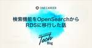

ONE CAREER Tech Blog
https://note.com/dev_onecareer
ワンキャリアのエンジニアによる技術者向けのブログです。普段の開発内容や、組織づくりなどを発信していきます。 一緒に働ける方を絶賛募集しています。 https://hrmos.co/pages/onecareer/jobs/1806286152938479622
フィード

検索機能をOpenSearchからRDSに移行した話
ONE CAREER Tech Blog
みなさんこんにちは！ワンキャリアでデータエンジニアをしている野田です！（GitHub：@tsugumi-sys）最近はウイスキーにハマっています！世界中のウイスキー価格が高騰する中、お手頃で美味しいものはないかと必死に探しています。最近、Amazonが招待制（抽選）で高級ウイスキーを定価で販売していることを知りました。抽選に応募してはや1ヶ月経ちましたが、そろそろ当選メールが届くとワクワクしながら待ち続けています。さて、趣味の話はこれくらいにして、早速本題に入っていきましょう！本記事では、ONE CAREERで展開するサービスで利用している検索機能をOpenSearchからRDSでの検索に移行した際の知見を共有します。OpenSearchを止めるべきだという話ではなく、要件次第ではコストを抑えつつ、RDSで検索機能を実現可能であるという学びを共有したいモチベーションで書かせていただきました。筆者は検索システムを取り扱うのが初めてのひよっこなので、温かい目で読んでいただけると幸いです。続きをみる
14日前

インフラアラートの運用を改善した話
ONE CAREER Tech Blog
はじめにHi everyone!SREチームに所属している渡邉です！私は現在新卒採用メディア「ONE CAREER」のEmbedded SREとして、SLOの監視文化の浸透やAWSを使ったインフラ基盤の改善に取り組んでいます。「Embedded SRE」とは、特定の開発チームと並走しながら一体となって開発と運用を担うSREの役割のことです。久しぶりのテックブログの投稿になりますが、今回は「ONE CAREER」も含めて弊社全サービスのインフラアラートの運用改善における取り組みについて共有します！続きをみる
1ヶ月前
約11年開発している「ONE CAREER」をインシデント0でRuby3.0系にバージョンアップしました
ONE CAREER Tech Blog
みなさんこんにちは！ワンキャリアでテックリードをしています、宇田川(X：@Ryoheiengineer)です！昨年10月に当社で歴史の深いプロダクトである「ONE CAREER」をRuby3.0系にバージョンアップしたので、今回はそれについて記事にしたいと思います。このプロダクトは、約11年も前から続くリポジトリで、モノリシックなRailsで書かれています。コード量は、130,000行以上にも及びます。続きをみる
1ヶ月前
不適切なデータを生成してしまうRakeタスクを見直して修正した話
ONE CAREER Tech Blog
はじめにこんにちは。ソフトウェアエンジニアの大橋（X: m_asa_o）です。続きをみる
1ヶ月前
AWS Lambda（Python）のモノレポ構成と開発環境
ONE CAREER Tech Blog
みなさんこんにちは！ワンキャリアでデータエンジニアをしている野田です！（GitHub：@tsugumi-sys）最近はウイスキーにハマっています！ジャパニーズウイスキーの価格が高騰する中、お手頃で美味しいものはないかと血眼になって探している日々です。最近飲んだ中で一番美味しかったのはシーバスリーガル18年です。さて、趣味の話はこれくらいにして、早速本題に入っていきましょう！本記事では、AWS Lambda（Python）を用いてデータパイプラインなどを構築する際のディレクトリ構成やテスト方法等の知見を共有します。こうすべきだというベストプラクティスの提示ではなく、一つの設計パターンとして受け取っていただけると幸いです。続きをみる
1ヶ月前
GKEのKubernetesクラスターにGCSのアップロードの権限を追加するKSAとGSAの設定方法
ONE CAREER Tech Blog
はじめにこんにちは！ワンキャリアでONE CAREER for Engineer(以降、OCE)開発チームのテックリードをやっている高根沢です。皆さんはKubernetes、使っていますでしょうか？OCE開発チームではインフラにKubernetesを使っているのですが、最近あった学びについてお話しできればと思います。具体的には、「Kubernetes Service Account(以降、KSA)とGoogle Service Account(以降、GSA)を連携することで、GKE上にデプロイされたアプリケーションからGCSを操作する方法」について解説していきます。続きをみる
1ヶ月前
SECCON CTF 2023 予選に参加してみたのでwriteup
ONE CAREER Tech Blog
はじめにおはようございます！ワンキャリアのセキュリティチームでエンジニアをやっている蟹です。続きをみる
2ヶ月前
Google Cloud Next Tokyo ’23現地参加レポート
ONE CAREER Tech Blog
はじめにみなさんこんにちは。ワンキャリアでコーポレートエンジニア兼SREを担当している野田（ @Hotaka_Noda）です。 普段は、CTO室に所属し、社内のシステム改善やセキュリティ、クラウド利用の最適化活動 (FinOps) を担当しています。2023年11月15日、16日に東京ビックサイトで実施された、Google Cloud Next Tokyo ‘23 に参加してきました。Google Cloud Next Tokyo '23 は、4年ぶりの東京ビッグサイトにおける現地開催となりました。続きをみる
3ヶ月前
「開発生産性Conference〜After Findy Team+ Award 2023〜」に登壇しました
ONE CAREER Tech Blog
本記事は、エンジニア組織の開発生産性・開発者体験向上の取り組みをシェアしよう！ by Findy Advent Calendar 2023 に参加しています。 エンジニア組織の開発生産性・開発者体験向上の取り組みをシェアしよう！ by Findyのカレンダー | Advent Calendar 2023 - Qiitaエンジニア組織の開発生産性・開発者体験向上の取り組みをシェアしよう！ by Findyのカレンダーページです。qiita.com 続きをみる
3ヶ月前
ワンキャリアで初めて挑戦した「エンジニアリングマネージャーのしごと」
ONE CAREER Tech Blog
この記事は Engineering Manager Advent Calendar 2023 シリーズ1 18日目の記事です。昨日はjinbeeeeさんの「スタートアップで1人EMが生まれた理由・生まれてからやっていること」でした。 スタートアップで1人目EMが生まれた理由・生まれてからやっていること - Qiitaこれは何？この記事はEngineering Manager Advent Calendar 2023 17日目の記事です。qiita.com 続きをみる
3ヶ月前
マイクロフロントエンドについて調査したのでまとめてみた[概念編]
ONE CAREER Tech Blog
みなさんこんにちは！ワンキャリア24卒内定者の西川(X：@takashi54461358)です！私は現在内定者インターンという形で、人事向け採用クラウド「ONE CAREER CLOUD」チームにてフロントエンド開発をおこなっております。今回から数本の記事に渡って、業務の中で進めていたマイクロフロントエンドについて調べたことをまとめてみようと思います。続きをみる
3ヶ月前
「技術的負債に向き合う Online Conference」のLT大会に参加してきました
ONE CAREER Tech Blog
こんにちは、エンジニアリングマネージャーの山口（@yamat47）です。去る11月26日に、「技術的負債に向き合う Online Conference」というイベントが開催されました。 技術的負債に向き合う Online Conference (2023/11/21 12:00〜)技術的負債に向き合う Online Conference 技術的負債は、サービスをグロースさせていく上でつきものですfindy.connpass.com 続きをみる
4ヶ月前
パフォーマンスレポートの開発で得た知見 〜レポート作成のためにデータをどう扱うか？〜
ONE CAREER Tech Blog
みなさんこんにちは！ワンキャリアでバックエンドエンジニアをしている野原です！2022年初頭に入社し、人事向け採用クラウドONE CAREER CLOUDの開発チームにて、バックエンド開発、フロントエンド開発、チームマネジメントなどを担当しています。詳しい自己紹介は過去のインタビュー記事をご覧ください。続きをみる
4ヶ月前
エンジニア歴14年の私が新卒でワンキャリアを選んだ理由
ONE CAREER Tech Blog
みなさんこんにちは！ワンキャリアでDevRelを担当しています中西(X: @nana_nigiiro)です！今回は、2023年4月に新卒で入社した高根沢光輔さんにインタビューを実施しました。続きをみる
4ヶ月前
新規プロダクトONE CAREER for EngineerのインフラにGCP & Kubernetesを使った話（技術選定編）
ONE CAREER Tech Blog
筆者についてこんにちは！ワンキャリアでOCE（ONE CAREER for Engineer）開発チームのテックリードを務めている高根沢です！続きをみる
5ヶ月前
【デスクツアー】ワンキャリアエンジニアの在宅環境を調査してみた②
ONE CAREER Tech Blog
はじめにこんにちは！DevHRチームの長谷川です。普段はエンジニア組織のTwitterアカウント(@OnecareerDevjp)の運用や、EntranceBookの作成・更新などを担当しております。続きをみる
5ヶ月前
最近リリースされたCSPM「Shisho Cloud」を使って、AWSリソース設定の不備を見直した話
ONE CAREER Tech Blog
はじめにみなさんこんにちは！ワンキャリアでセキュリティエンジニアをしています、蟹と申します。続きをみる
5ヶ月前
ワンキャリア×PR TIMES Tech Talk Night振り返りレポート
ONE CAREER Tech Blog
こんにちは！DevRelチームの中西（@nana_nigiiro）です。2023年9月29日に、株式会社PR TIMES様（以下、PR TIMES）とワンキャリアとで2回目の合同勉強会「ワンキャリア x PR TIMES Tech Talk Night」を開催しました。今回はオフラインかつ、社外の方も参加可能な形で実施いたしました。 【PRTIMES.DEV】ワンキャリア×PR TIMES Tech Talk Night (2023/09/29 19:00〜)# イベント概要 本イベントは、ワンキャリア×PR TIMESの合同勉強会で、両社が普段から利用している「AWS」「AIprtimes.connpass.com 続きをみる
5ヶ月前
LLM登場までの深層学習の歴史を振り返ってみた[後編]
ONE CAREER Tech Blog
みなさんこんにちは！ワンキャリアでデータサイエンティストをしている長谷川です！今回の記事では、LLM（Large Language Model：大規模言語モデル）登場に至るまでの深層学習の歴史の後編となります。続きをみる
6ヶ月前
Rails で Playwright が公式にサポートされたので RSpec 経由で使ってみた
ONE CAREER Tech Blog
こんにちは、エンジニアリングマネージャーの山口（@yamat47）です。Beta1 が 9 月 13 日にリリースされ、段々と Rails 7.1 の足音が聴こえはじめましたね。rails new した際の設定をもとに Dockerfile を生成してくれるようになったり、ActiveRecord で非同期クエリのサポート範囲が広がったりと、今回も様々な進化を遂げています。（目玉機能こそないものの）開発者への支援がより強化されるリリースになりそうで、いまからとても楽しみです。続きをみる
6ヶ月前
継続的なOSS活動によって新卒1年目エンジニアが得られたもの[後編]
ONE CAREER Tech Blog
みなさんこんにちは！ワンキャリアでエンジニアをやっている野田(Github：https://github.com/tsugumi-sys)です！2023年4月に新卒エンジニアとして入社し、新卒採用メディア「ONE CAREER」の開発チームに所属しています。前編の記事では、OSS活動を継続している理由や業務にどう役立っているかについてまとめました。まだご覧いただいていない方は、ぜひお目通しいただけると幸いです。続きをみる
6ヶ月前
継続的なOSS活動によって新卒1年目エンジニアが得られたもの[前編]
ONE CAREER Tech Blog
みなさんこんにちは！ワンキャリアでエンジニアをやっている野田(Github：https://github.com/tsugumi-sys)です！2023年4月に新卒エンジニアとして入社し、新卒採用メディア「ONE CAREER」の開発チームに所属しています。特に最近はユーザー体験の向上を目指し、ユーザー行動ログの整備や解析をメインに取り組んでいます。既に別記事でも触れている内容ではありますが、ワンキャリアではエンジニアの技術力向上のために、OSSコントリビュートを推進しています。続きをみる
6ヶ月前
GoとgRPCを用いたサービスベースアーキテクチャへの移行
ONE CAREER Tech Blog
導入こんにちは。ワンキャリアでバックエンドエンジニアをしている田中（@kakke18_perry）です。業務では、ONE CAREER CLOUDの開発に携わっており、リアーキテクチャの一環で、一部の機能をGo+gRPCでリプレイスしています。続きをみる
6ヶ月前
Japan TBM Summit 23 に登壇したお話 〜FinOpsとTechnology Business Management 〜
ONE CAREER Tech Blog
はじめにワンキャリアでコーポレートエンジニア兼SREを担当している野田（ @Hotaka_Noda）です。 普段は、コーポレートITチームとSREチームに所属し、社内のシステム改善やセキュリティ、クラウド利用の最適化活動 (FinOps) を担当しています。続きをみる
7ヶ月前
LLM登場までの深層学習の歴史を振り返ってみた[前編]
ONE CAREER Tech Blog
はじめにみなさんこんにちは！ワンキャリアでデータサイエンティストをしている長谷川です！企業イメージメーカーのリリース以来、2本目の投稿になります。続きをみる
7ヶ月前